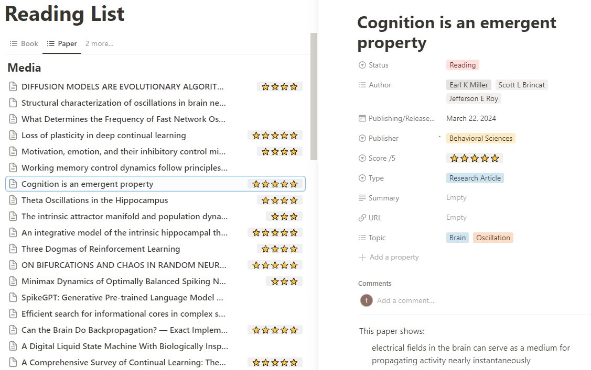
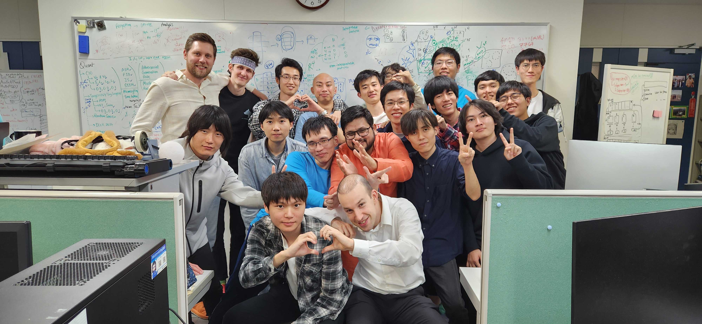

This blog briefly covers my personal experience as a PhD student and serves as a guide based on my take on “what to do and what to avoid” during your PhD journey.
I recently graduated with a PhD in artificial intelligence, where my research focused on recurrent neural networks, modeling central pattern generators, and exploring the adaptability of AI through self-organizing dynamical equations. In other words, I dabbled in quite a few random and exciting topics.
Overall, I must admit that I didn’t graduate with the level of success I initially hoped for. It started as an exciting and run journey, but midway through, it became more challenging due to unforeseen personal matters unfortunately, making the already challenging journey to be a harder one. With this blog, I aim to share some key takeaways from my journey. My hope is that you can learn from my experiences and make your own PhD experience more fulfilling and enjoyable.
So, let’s get straight into the first one.
During your PhD, you will likely read hundreds, if not thousands, of papers. Unless you have a photographic memory, it is crucial to take notes. Here is a scenario you will want to avoid: “I remember reading an interesting paper I could cite for this topic, but I can’t recall where I found it!”. To prevent this, make a habit of taking notes, even if the paper is not groundbreaking but raises a small point that piques your interest. Also, It is okay if you didn’t fully read the paper (like most of us did), just add it to your note database after glancing through it.
I use Notion as my database to organize all the papers I have read. For each paper, I include notes about the key ideas or interesting aspects. I also tag properties like the author’s name, publication date, the journal or conference, and the subject area. If you want to take it a step further, you can rate the papers based on how likely you are to reference them in the future or create a custom rating system that works for you. This practice will save you countless hours and headaches down the road!
 Using Notion as a database to store the papers I have read.Novelty, novelty, novelty! Always ask yourself: Is this work of research novel enough? Focus your time and energy on research that has not been attempted before or addresses unsolved problems in a meaningful way.
I have spent time working on research that was not truly novel, or in some cases, other works have solved the same problem with better accuracy. Looking back, I regret the time I spent on those projects, as it could have been used for more impactful research. To avoid this, conduct thorough literature reviews. Always keep in mind that if you have an idea, there is a high chance someone else might have already explored it. That said, it is okay to start with less novel research to gain experience and build momentum if you don’t have any great idea at the moment. However, always stay prepared to think and shift to the next significant and impactful project you want to pursue.
Build expertise that sets you apart. It is not enough to be an expert among average individuals, you must be an expert among experts. For example, being an expert in generative models is not enough. There are a total of 15,600 papers submitted to NeurIPS in 2024 alone, and let’s say 20 percent of them are related to generative models. Let’s roughly say each paper represents a person, there are still around 3000 people who share the same expertise as you. That makes you easily replaceable and not special.
To truly stand out, you need to go deeper. Do not just specialize in generative models, focus on a subdomain, like diffusion models. But even that’s not enough. Go deeper still, for instance, applying diffusion models to simulate physical events. Now you have carved out a niche where you can claim to be an authority, if not the best. This approach is crucial not only for your PhD studies but also for the academic career you may pursue afterward. By establishing yourself as a leading expert in a well-defined niche, you secure your uniqueness and increase your impact in the field.
Building connections is important, especially as you approach graduation. While it may not seem as immediately important to your research, networking can be invaluable when it comes to finding collaborators, securing recommendations, or landing a job after graduation.
Make an effort to attend more events and conferences, and actively engage with as many people as possible. However, do not stop at just meeting people, focus on establishing deeper, meaningful connections. Prioritize events or gatherings where you can foster deeper relationships, rather than simply exchanging introductions and never see each other again (Actually, it is fine to have a casual conversation too, but wouldn’t bring much impact to establishing your network). Strong connections can open doors to opportunities you may not have anticipated, making your post-graduation career transition much smoother and more successful.
One of my biggest regrets during my PhD journey was not dedicating enough time and focus to a single research topic. Instead, I let my curiosity lead me in multiple directions, exploring many fascinating topics in AI. While this broad interest was exciting, it often resulted in research that lacked depth, making it harder to achieve meaningful results.
Shallow or incomplete research rarely gets accepted in reputable journals or conferences, leading to multiple submissions, revisions, and rejections. Ironically, this scattershot approach ended up taking more time than focusing deeply on one solid project that could have been accepted on the first attempt. Additionally, research that is not deep enough is unlikely to gain traction or citations, limiting its influence in the field. In contrast, a well-focused and significant study has a higher chance of attracting attention, establishing your credibility, and becoming a stepping stone for your academic or professional career.
Focusing on fewer but higher quality research that might take longer time to complete is not just more efficient, it is also far more rewarding in the long run.
Develop the habit of writing code, doing the math, and sketching workflows. These practices are crucial because you wouldn’t always know how to approach an idea right away. However, if you keep experimenting and iterating, you will eventually stumble upon a method that brings your idea to life. Without experimentation, you can’t prove whether your idea is right or wrong. And without results, you will never know if your concept holds any merit.
For instance, I have always been interested in creating a central pattern generator (CPG) using neural networks. One day, while experimenting with echo state networks, I realized they could be repurposed to simulate simple CPG behaviors. By trying out different methods, I was able to achieve the results I was looking for. (link to the blog)
The key is persistence, keep exploring, testing, and refining. Great ideas often emerge unexpectedly through consistent effort.
Depending on your field, this might vary in importance, but if your research involves running algorithms or simulations (for example, training a neural network or running a multi-agent simulation), securing sufficient computational power is crucial.
Look for labs, collaborations, or funding opportunities that can help you access the computational resources you need. Whether it is high-performance computing clusters, cloud credits, or specialized hardware like GPUs, having more computational resources can save you significant time. Instead of waiting weeks or even months for results, you can focus on analyzing data and progressing your research more efficiently.
Many people start their PhD without a clear plan beyond the goal to graduate. While graduating is important, it is critical to break this down into smaller, actionable goals that will guide you toward that ultimate objective. Not having clear goals can be detrimental, leading you to spend time reading papers aimlessly without producing any meaningful output. Instead, set specific targets, such as submitting to a particular journal, presenting at a conference per year, or completing a research milestone within a given timeframe.
Once you have established your goals, create a detailed plan to achieve them and, most importantly, stick to it. Clear goals not only provide direction but also help boost your motivation and productivity, giving you tangible markers to work toward.
You do not need to focus on your thesis fully from the start, but it is wise to think about it periodically and begin preparing early. Create a database or repository to collect ideas, references, and sections you want to include in your thesis. This proactive approach can save you a lot of stress before graduation. Also, it helps to organize your roadmap of what research/niche you want to pursue down the line. Of course, unless you plan to simply compile all the papers you have published into your thesis without any modifications, which is also a valid approach depending on the university.
By building your thesis incrementally, you will have a stronger foundation to work from when it is time to finalize it, making the writing process far less overwhelming.
Life during a PhD can be unpredictable. Unexpected challenges such as the death of a family member, a bad relationship with your supervisor (though mine was great), being dumped from a situationship, illness that keeps you bedridden, losing confidence after hearing harsh criticism from your reviewers, depression, losing friends because of distance, homesickness from being away from your home country for years, breaking up with a partner of 10 years, war breaking out in your home country, financial struggles from funding cuts… and the list goes on. I have seen people, both in real life and on Reddit, face these difficulties. Sadly, such events can’t be avoid and have led to drop out, struggle through a bad PhD experience, or fail their defense.
Therefore, it is essential to prepare for the worst. Ask yourself: What would I do if one of these situations happened to me? Have a plan in place to recover from setbacks, and be ready to cope with mental breakdowns if they arise. These challenges can significantly impact your PhD, but with preparation and expectation, you can minimize the damage and keep moving forward.
Overall, these are the things I would focus on or avoid if I had the chance to redo my PhD. Lastly, remember to enjoy the journey. This is a unique phase of your life before stepping into your career, this is a time to meet incredible people, test your abilities, and prove your perseverance. I trust that your PhD journey will be awesome and amazing.
 Shout out to my lab mates and supervisor.